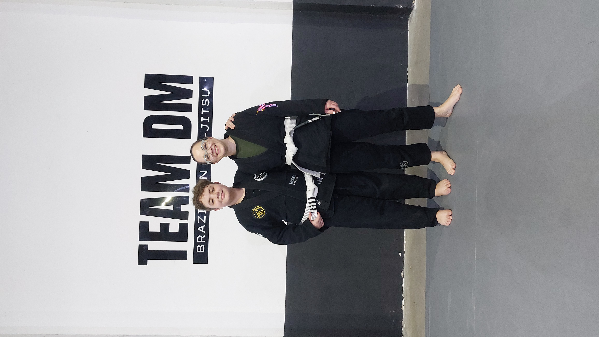
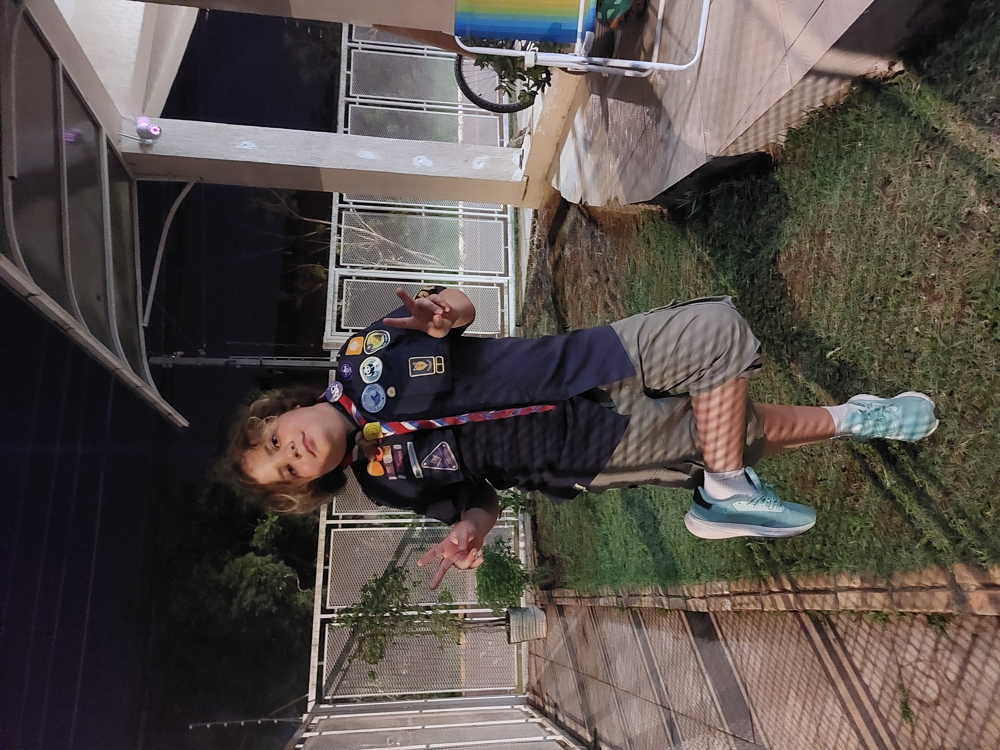
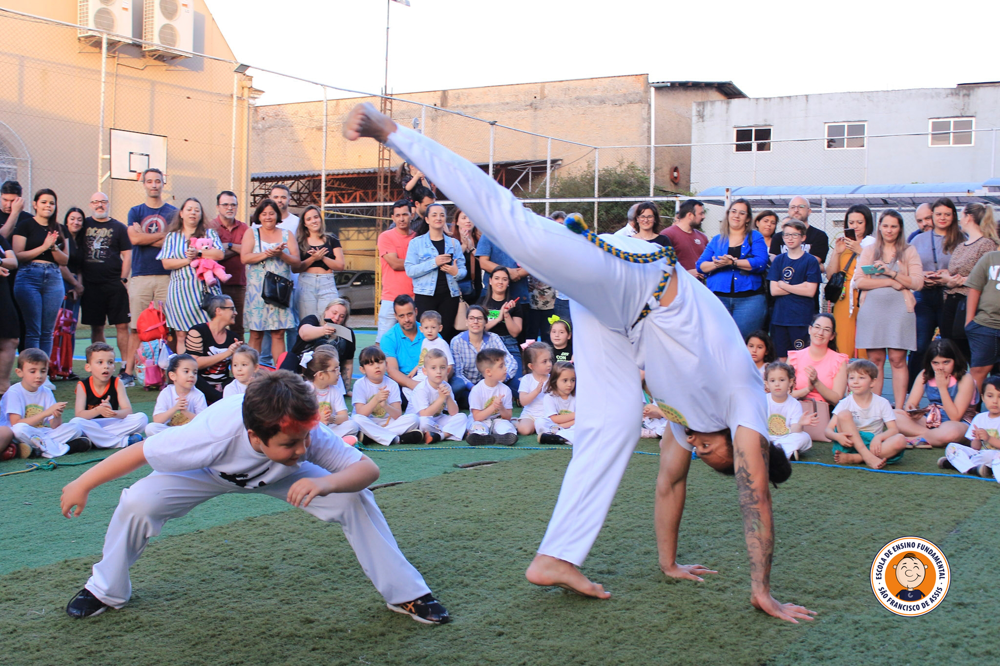
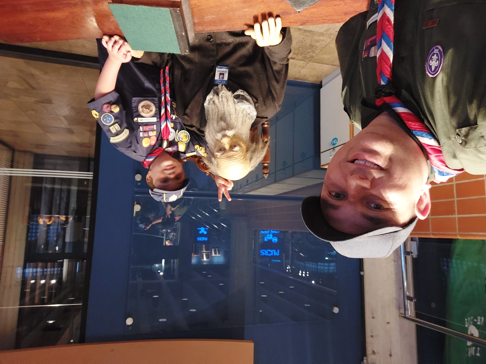
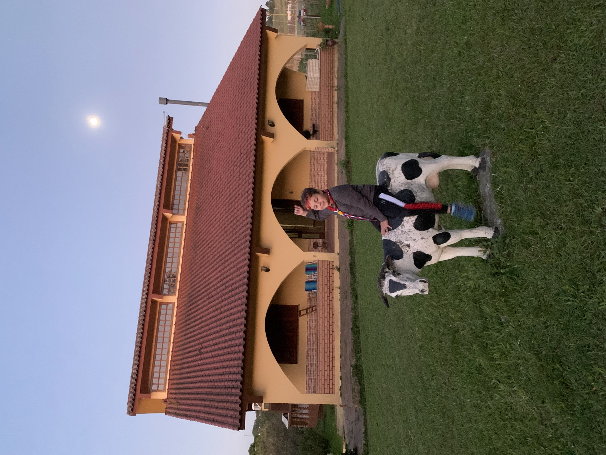
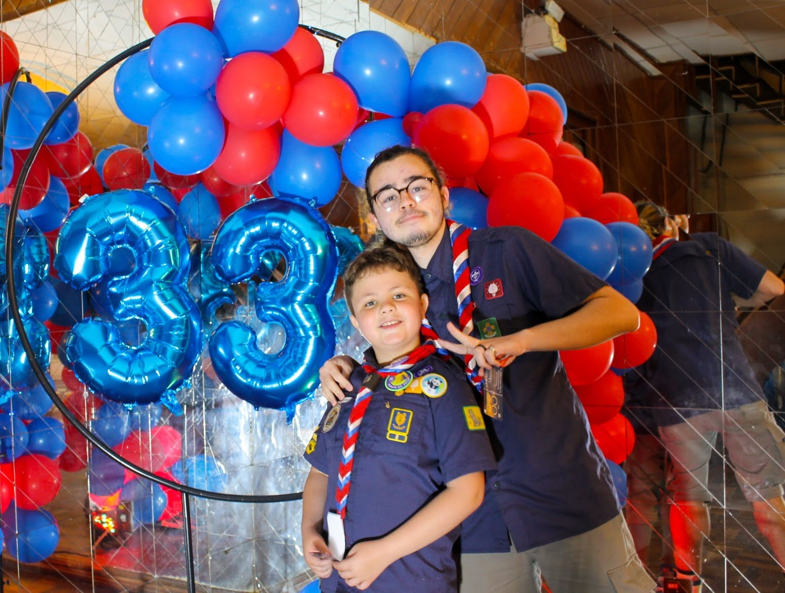

Esporte
No jiu-jitsu, Tony aprende disciplina, persistência, respeito, controle emocional e superação.
Tony Mengue é um guri em constante evolução. Sua caminhada é construída sobre três pilares: esporte, escotismo e família.
Tony Mengue tem 11 anos, mora em Cachoeirinha/RS e está no 6º ano do Ensino Fundamental.
Treina jiu-jitsu pela TEAM DM, onde é faixa branca com três graus. Além do esporte, participa há cinco anos do Grupo Escoteiro Arno Friedrich, fortalecendo responsabilidade, trabalho em equipe, liderança e respeito.
Mais do que registrar resultados, sua história é sobre crescimento, aprendizado e desenvolvimento humano.

O esporte, o escotismo e a família caminham juntos na formação do Tony.
No jiu-jitsu, Tony aprende disciplina, persistência, respeito, controle emocional e superação.
No escotismo, desenvolve autonomia, responsabilidade, amizade, liderança e espírito de equipe.
A família é a base que acompanha, incentiva e participa dos momentos importantes da sua caminhada.

Antes de vestir o kimono, Tony é um filho, estudante, amigo e escoteiro. Gosta de aprender, valoriza os momentos com a família e encara cada desafio como uma oportunidade de crescer.
No escotismo, o que mais gosta são as amizades. Uma das lembranças que guarda com carinho é o dia em que recebeu seu lenço.
“Aprendi a respeitar meus professores, controlar minhas emoções, aceitar as derrotas e continuar treinando para evoluir. Hoje sei que cada treino me torna uma pessoa melhor.”
Uma trajetória que começou antes das competições e continua sendo construída a cada experiência.
Esporte, escotismo, família e experiências que também fazem parte dessa história.




“Meu sonho é ser atleta profissional e, quando crescer, também trabalhar com nobreaks. Daqui a cinco anos espero estar muito melhor no Jiu-Jitsu do que hoje.”
“Mais do que qualquer resultado, eu gostaria que as pessoas lembrassem de mim como um guri que nunca tira o sorriso do rosto, mesmo quando perde.”
— Tony Mengue